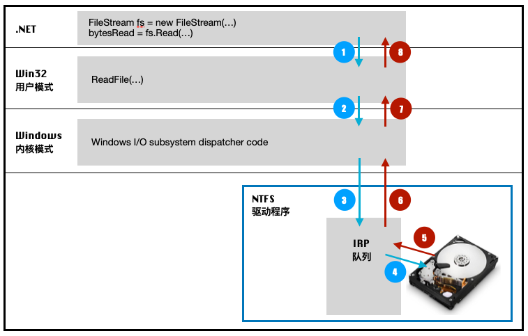
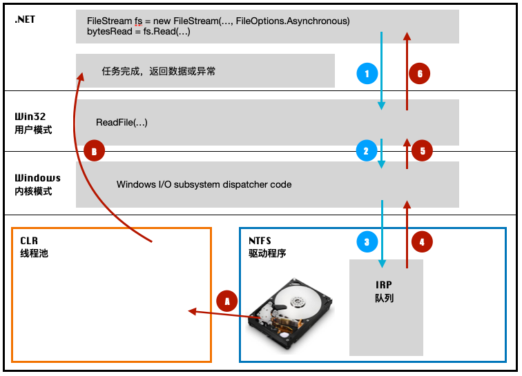

线程创建与销毁的代价
首先我们来从空间和时间上分析以下线程的开销。
空间开销
线程包括以下几个需要空间开销的要素：
- 线程内核对象
系统在初始化的时候给线程分配的数据结构，里面包括线程上下文，对于x86和x64系统，线程上下文分别使用约700和1240字节。 - 线程环境块
线程环境块是在用户模式栈中分配的内存块，占用一个内存页（4KB），包含线程的异常处理链首。 - 用户模式栈
占用1M内存，包含当前方法的局部变量和实参，以及一个指向当前方法返回后，线程应该从什么地方开始执行的地址 - 内核模式栈
用于当应用程序的代码向系统中的内核模式函数传递实参时的栈，保存实参。32位Windows和64位Windows大小分别为12KB和24KB。
时间开销
- Windows的一个机制是在任何时候创建和销毁线程，都需要调用进程中加载的所有非托管DLL的DllMain方法，有的DLL需要获取通知，然后执行自己的初始化或者清理方法。
- 每次上下文切换，Windows都需要做以下几件事
- 把CPU寄存器的值保存到当前线程的内核对象中
- 从现有线程集合中找一个线程进行调用，如果这个线程属于另一个进程，那么CPU还必须切换到对应的内存空间
- 将所选的上下文结构中的值加载到CPU寄存器中
Windows大约每30ms都会进行一次上下文切换，可见如果线程过多，那么在线程切换上的开销也是非常大的
合理使用线程
如果只关心性能，那么最优的线程数就是CPU的数目（对于多核CPU，每个核算一个CPU）。
Windows是如何处理异步I/O的
下面我们以文件系统举例，来看一下Windows是如何来执行同步和异步I/O操作的，下图是系统从磁盘读取文件的流程
同步I/O
如下图，当我们使用同步I/O从文件读取数据时，系统按照从1-8的步骤将数据读出来，在第4步和第5步之间，硬盘正在进行文件读取，此时发出请求的线程处于睡眠状态，防止他浪费CPU的时间，当硬盘完成文件读取工作后，会唤醒线程，将文件数据一层一层的返回。
Note：虽然中间线程处于睡眠状态，但是线程并没有释放，因此他占用的内存资源也都还存在内存中，内存依然被占用

异步I/O
如下图，我们利用FileOptions.Asynchronous实现文件的异步读取，此时读取的线程在经过从1-6六个步骤后直接返回，然后线程释放，回到线程池，当硬件设备读取完文件数据，会将任务放到CLR 线程池的任务队列中，即A，由CLR从线程池中选取空闲的线程进行处理，即B

上面两个图片参考自CLR via C#(第4版)